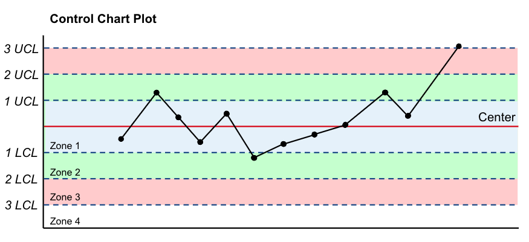
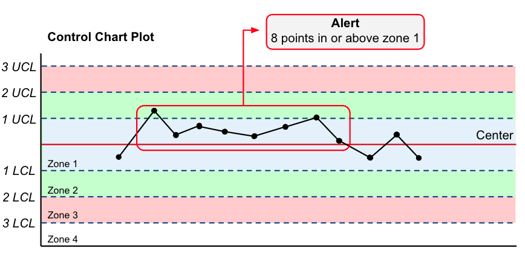

Alerting¶
As mentioned, Scouter's monitoring and alerting methodology is based on statistical process control.
Statistical Process Control (reference)¶
The basic idea of statistical process control is to compare current process output/data to previous/expected output/data. To do this from an modeling perspective, we take a snapshot of the model's data and predictions at the time of model creation and create a DriftProfile. This is done by sampling the data and calculating a series of means and standard deviations in order to approximate the population distribution. From this grand mean and standard deviation, we can calculate the upper and lower control limits for the data.
Reference for grand mean and standard deviation calculations: link
Formulas¶
Sample mean and standard deviation:
Grand sample mean and standard deviation:
Where \(c_4\) is the bias correction factor for the sample standard deviation. The bias correction factor is given by:
Control limits:
Where \(k\) is the number of standard deviations from the grand mean. Typically, \(k=3\) is used for the upper and lower control limits.
Note: the calculation of control limits in Scouter uses \(\hat\sigma{}\). In some text books you will see \(\frac{\hat\sigma{}}{\sqrt{n}}\). Scouter uses the former in order to widen the control limits and reduce false positives.
Control Limits¶
Out of the box, Scouter will calculate the center line and control limits for 3 zones (\(\pm{1}\), \(\pm{2}\) and \(\pm{3}\)). This is based on the 3 sigma rule in process control. The resulting chart and zones would appear as follows if plotted:

Each dot on the chart represents the mean of a sample from the process being monitored
Zone specifications are as follows:
- Zone 1: 1 LCL -> 1 UCL
- Zone 2: 2 LCL -> 2 UCL
- Zone 3: 3 LCL -> 3 UCL
Alerting¶
When new data comes in, we can compare the new data to calculated control limits to see if the process is stable. If it's not, we can generate alerts. So what does stable mean? In process control, a process is considered stable if the data points fall within the control limits and follow a non-repeating patten. There is great room for flexibility in this definition, which allows data scientists and engineers to customize their alerts rules.
By default, Scouter follows an 8 digit rule for process control. The default rule follows WECO rules with some modification, which is defined as "8 16 4 8 2 4 1 1".
Rule breakdown¶
First digit- Zone 1 - 8 points in n + 1 observations on one side of the center line in Zone 1 or greater
Second digit- Zone 1 - 16 points in n + 1 observations on alternating sides of the center line in Zone 1 or greater
Third digit- Zone 2 - 4 points in n + 1 observations on one side of the center line in Zone 2 or greater
Fourth digit- Zone 2 - 8 points in n + 1 observations on alternating sides of the center line in Zone 2 or greater
Fifth digit- Zone 3 - 2 points in n + 1 observations on one side of the center line in Zone 3 or greater
Sixth digit- Zone 3 - 4 points in n + 1 observations on alternating sides of the center line in Zone 3 or greater
Seventh digit- Zone 4 (Out of Control) - 1 points in n + 1 observations on one side of the center line greater than Zone 3
Eighth digit- Zone 4 (Out of Control) - 1 points in n + 1 observations on alternating sides of the center line greater than Zone 3
In addition to the 8 digit rule, Scouter will also check for a consecutive trend of 7 increasing or decreasing points and return an alert if one is detected.
Example Alert¶

Custom Alerts¶
Scouter provides the ability to create your own custom 8 digit rules. Below is an example of how to create a custom rule:
from scouter import DriftConfig, AlertRule, ProcessAlertRule, AlertDispatchType
# Create a custom rule
custom_rule = AlertRule(
process=ProcessAlertRule(
rule="16 32 4 8 2 4 1 1" # create your custom rule here
),
)
# Create a drift config
config = DriftConfig(
name="model",
repository="scouter",
version="0.1.0",
alert_rule=custom_rule,
alert_dispatch_type=AlertDispatchType.Console,
)
scouter._scouter.AlertRule
¶
Source code in scouter/_scouter.pyi
146 147 148 149 150 151 152 153 154 155 156 157 158 159 160 161 162 163 | |
percentage: Optional[PercentageAlertRule]
property
¶
Return the percentage alert rule
process: Optional[ProcessAlertRule]
property
¶
Return the control alert rule
__init__(percentage_rule=None, process_rule=None)
¶
Initialize alert rule
Parameters:
| Name | Type | Description | Default |
|---|---|---|---|
rule |
Rule to use for alerting. |
required |
Source code in scouter/_scouter.pyi
147 148 149 150 151 152 153 154 155 156 157 | |
scouter._scouter.ProcessAlertRule
¶
Source code in scouter/_scouter.pyi
133 134 135 136 137 138 139 140 141 142 143 144 | |
rule: str
property
¶
Return the alert rule
__init__(rule=None)
¶
Initialize alert rule
Parameters:
| Name | Type | Description | Default |
|---|---|---|---|
rule |
Optional[str]
|
Rule to use for alerting. Eight digit integer string. Defaults to '8 16 4 8 2 4 1 1' |
None
|
Source code in scouter/_scouter.pyi
134 135 136 137 138 139 140 141 | |
scouter._scouter.PercentageAlertRule
¶
Source code in scouter/_scouter.pyi
121 122 123 124 125 126 127 128 129 130 131 | |
rule: float
property
¶
Return the alert rule
__init__(rule=None)
¶
Initialize alert rule
Parameters:
| Name | Type | Description | Default |
|---|---|---|---|
rule |
Optional[float]
|
Rule to use for percentage alerting (float) |
None
|
Source code in scouter/_scouter.pyi
122 123 124 125 126 127 128 | |
Percentage Alerting¶
In addition to the 8 digit rule, Scouter also provides the ability to alert on percentage drift. This is useful when you want to know if a feature has drifted by a certain percentage. The default percentage rule is .10 (10%).